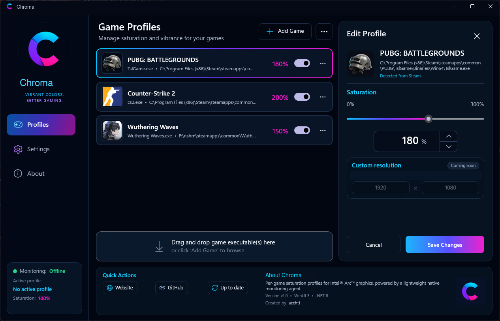

Per-game profiles
Give every game its own saturation level with a clean, focused editor.
Intel · NVIDIA · AMD
Create a saturation profile for each game. Chroma detects what you are playing, applies the profile, and restores your desktop afterward.

Simple by design
Give every game its own saturation level with a clean, focused editor.
Your profile activates with the game and your desktop colors return afterward.
A lightweight tray agent connects to Intel IGCL, NVIDIA NVAPI, or AMD ADLX.
How it works
No driver-menu routine every time you launch a different game.
Choose its executable.
Pick the color level you like.
Chroma handles the switch.
Ready when you are
Download the latest Windows x64 release from GitHub.